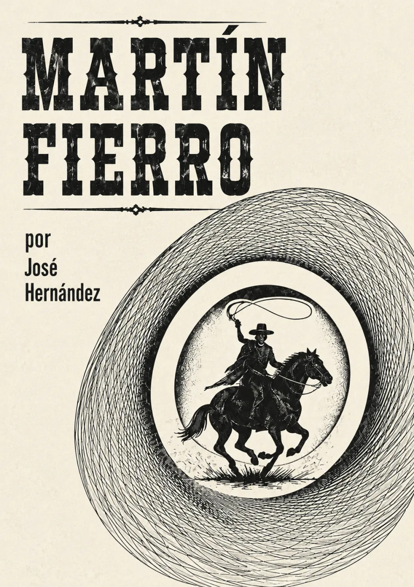

Audiolibros · Tercera Ola
Martín
Fierro
José Hernández · Primera parte: 1872 · La vuelta: 1879
El canto de quien perdió su tierra.
Una guitarra abre la memoria.
La frontera atraviesa una vida.
El gaucho cuenta su propia historia.
Una vida al compás del canto.
Volumen

Una voz frente a la frontera
Fierro empieza cantando y hace del relato una defensa de su vida. La leva lo arranca del trabajo y de su familia; el servicio de frontera, la deserción y la persecución transforman al hombre de campo en un matrero. La denuncia política se escucha en una lengua literaria que recrea el habla rural.
La pampa no es un vacío: es trabajo, memoria y un territorio atravesado por el poder.
En La vuelta, el regreso y el encuentro con sus hijos amplían las voces del poema. Leer ambas partes permite seguir esos cambios sin convertir al personaje en un héroe sin contradicciones ni confundir su voz con la de todos los habitantes de la campaña.
El gaucho Martín Fierro apareció en 1872; La vuelta de Martín Fierro, en 1879. Fechas y contexto crítico: Secretaría de Cultura · entrevista con Alejandra Laera. Texto de la primera parte. La imagen superior es una interpretación artística del paisaje gauchesco, no un retrato histórico.
La lectura
Primera parte · 1872
La vuelta · 1879
Recorrido por las dos partes del poema. Claves de escucha: el canto, la leva, la pérdida del hogar y el regreso. Grabaciones pendientes de incorporación.
Reseñas
Excelente